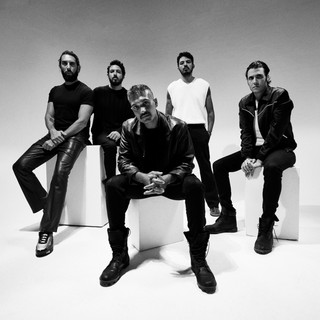

Cairokee is an Egyptian rock band that was officially launched in 2003 but came to prominence with its revolutionary music following the Egyptian Revolution of 2011 due to its politically-inspired lyrics and protest songs released following the uprising. Their signature song "Ya El Midan", featuring Aida el Ayoubi, who had retired in the 1990s, ranked number one on Facebook worldwide for downloads and number eight on YouTube.
Members from left to right: Tamer Hashem, Sherif Mostafa, Sherif El Hawary, Amir Eid & Adam El-Alfy.